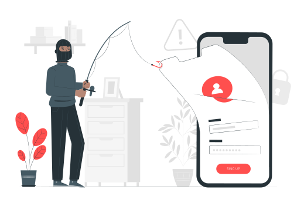
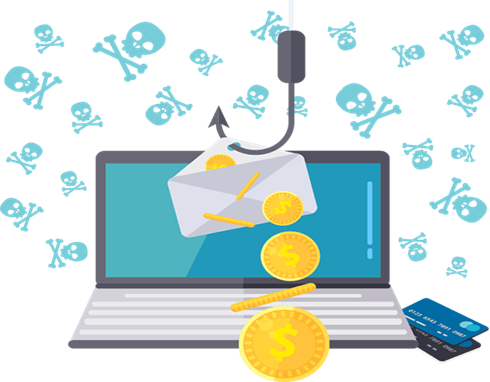

TABLE OF CONTENTS:
1-La sécurité
2-importance
3-les types de sécurité
5-Les défis
6-Les reponses
1-La sécurité
2-importance
3-les types de sécurité
Introduction
1-La securite
La sécurité désigne l'ensemble des mesures et des précautions prises pour protéger des biens, des informations ou des systèmes contre les risques, les menaces et les attaques. Cela inclut la protection contre le vol, la perte, l'accès non autorisé, les dommages, ainsi que la prévention des risques potentiels qui peuvent compromettre la confidentialité, l'intégrité et la disponibilité des données ou des infrastructures.
2-Importance de la sécurité
L'utilisation de l'internet (1990-2023)
Qu'est ce qu est l'imporatnce de la securité !
L'importance de la sécurité réside dans sa capacité à protéger les individus et les organisations contre les menaces potentielles, à préserver la confidentialité des informations, à assurer la continuité des activités et à maintenir la confiance des utilisateurs, clients et partenaires. Elle est essentielle pour éviter les pertes financières, les atteintes à la réputation et les perturbations liées aux attaques ou aux violations de données.
3-Les typrs de securite
La sécurité du réseau et la sécurité Internet :
La sécurité des données fait référence à l'ensemble des pratiques et des technologies utilisées pour protéger les informations contre les accès non autorisés, les fuites, la corruption, la modification ou la perte. Elle inclut des mesures telles que le chiffrement des données, l'authentification forte, les contrôles d'accès, les sauvegardes régulières, ainsi que les politiques de gestion des données afin de garantir la confidentialité, l'intégrité et la disponibilité des informations.
2/La sécurité des donnees:
La sécurité des données fait référence à l'ensemble des pratiques et des technologies utilisées pour protéger les informations contre les accès non autorisés, les fuites, la corruption, la modification ou la perte. Elle inclut des mesures telles que le chiffrement des données, l'authentification forte, les contrôles d'accès, les sauvegardes régulières, ainsi que les politiques de gestion des données afin de garantir la confidentialité, l'intégrité et la disponibilité des informations.
3/La securité des applications
La sécurité des applications désigne l'ensemble des pratiques et des mesures mises en place pour protéger les applications contre les vulnérabilités et les attaques. Cela inclut la mise en œuvre de contrôles d'accès, le chiffrement des données, la validation des entrées pour éviter les injections malveillantes, ainsi que la gestion des autorisations et des mises à jour de sécurité. L'objectif est de garantir que les applications fonctionnent de manière sécurisée, sans compromettre la confidentialité, l'intégrité et la disponibilité des données traitées.
4-Les défis
5-Les réponses
2-Les enjeux sécuritaires
La securite est un défense...mis contre qui!
4/Les défis:
Les pirates :
Le terme piratage informatique est généralement associé à un pirate ou “hacker”, une personne compétente en matière de systèmes informatiques et de technologies de l’information. Il applique ses connaissances techniques pour franchir les « barrières » de sécurité d’un système par des techniques non standard et souvent malveillantes.
Le piratage, ou les comportements inhérents à la plupart des pirates, est généralement considéré comme synonyme de cyberattaque et d’autres actes nuisibles ou menaçants.
Toutefois, les termes “pirates”, et “attaquants” ne sont pas nécessairement interchangeables, car certaines formes de piratage peuvent avoir des intentions éthiques et fondées sur la recherche.
Il n’en reste pas moins que la menace du piratage informatique est une question sérieuse qui ne doit être négligée dans aucun contexte, en particulier en ce qui concerne la prévention de la cybercriminalité et la protection contre les violations de données.
1,500,000
C’est le nombre des personnes piratés “chaque jours”
« 21,900,000,000 »
Le montant d’argent piraté « chaque jour »
Ces statiques ne semblent pas réelle au début, mais malheureusement le piratage en ligne est devenu de plus en plus un phénoméne dangereux surtout avec l’apparition de crypto currency qui facilite aux pirates informatiques et les offrent plusieurs opportunités de voler sans exposer leurs existences
Quels sont les attaques les plus connus et comment les défendre !
4/Les types d'attaques:
Attaques par brute force:
Cette méthode consiste à essayer toutes les combinaisons possibles de caractères jusqu'à ce que la bonne soit trouvée. Elle est principalement utilisée pour casser des mots de passe ou des clés de chiffrement. Bien qu'efficace contre les mots de passe faibles, cette méthode peut prendre beaucoup de temps sans ressources informatiques puissantes. Les attaques par dictionnaire sont une variante de la force brute, où l'attaquant utilise une liste préétablie de mots de passe probables pour accélérer le processus.
Phishing:
Le phishing est l'une des techniques les plus courantes pour voler des informations personnelles. Les attaquants se font passer pour des organisations légitimes via email, réseaux sociaux ou messages texte pour tromper les utilisateurs et les amener à fournir des détails sensibles comme des mots de passe ou des informations bancaires. Le spear phishing cible spécifiquement des individus ou des organisations, rendant l'attaque plus convaincante.
Injection SQL:
L'injection SQL se produit lorsqu'un attaquant insère du code SQL malveillant dans une requête, ce qui lui permet de manipuler ou d'accéder à la base de données d'une application web. Cela peut entraîner un accès non autorisé à des données sensibles, la suppression d'enregistrements, voire la compromission totale du système.
1. Utiliser des mots de passe forts
Créez des mots de passe uniques et complexes pour protéger vos comptes contre les piratages.
2. Activer l’authentification à deux facteurs (2FA)
Ajoutez une couche de sécurité supplémentaire pour empêcher l'accès non autorisé.
3. Éviter les liens et e-mails suspects
Ne cliquez jamais sur des liens douteux ou des pièces jointes non vérifiées pour prévenir les attaques de phishing.
4. Mettre à jour régulièrement vos logiciels
Les mises à jour corrigent les failles de sécurité exploitées par les cybercriminels.
Q/A
1/Qu’est-ce qu’un mot de passe sécurisé ?
2/Comment éviter le phishing ?
3/Pourquoi utiliser l’authentification à deux facteurs ?
4/Quels sont les dangers des logiciels obsolètes ?
5Comment reconnaître un e-mail frauduleux ?
6/Qu’est-ce qu’une attaque par force brute ?